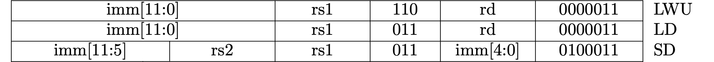
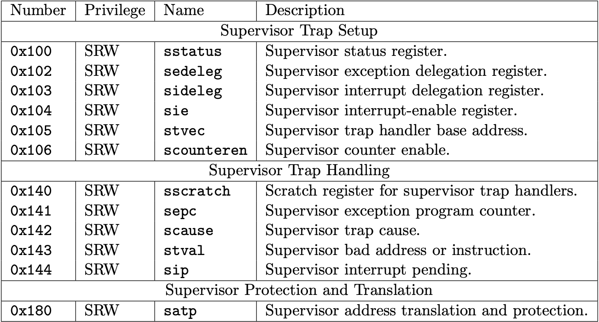
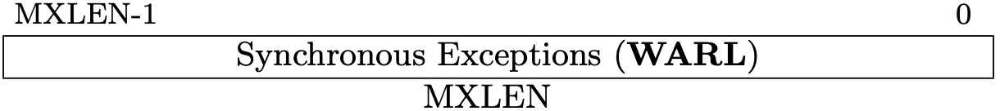
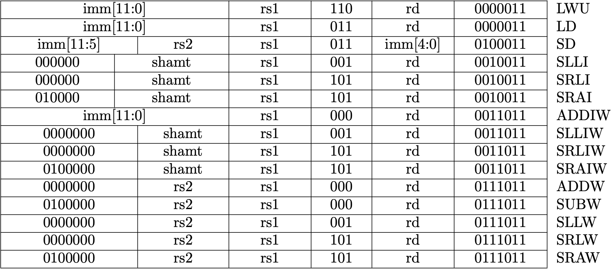

Writing a RISC-V Emulator in Rust
NOTE: This project is actively ongoing. Pages are not perfect yet and it possible to change dramatically.
Introduction
This is the book for writing a 64-bit RISC-V emulator from scratch in Rust. You can run xv6, a simple Unix-like OS, in your emulator once you finish the book.
You'll learn the basic computer architecture such as ISA, previleged architecture, exceptions, interrupts, peripheral devices, and virtual memory system from making an emulator.
The source code used in this book is available at d0iasm/rvemu-for-book.
Chapter 1
Chapter 1 shows all hardward components we need to implement for running xv6.
- CPU with Two Instructions
- Memory and System Bus
- Control and Status Registers
- Privileged Architecture
- Exceptions
- PLIC (a platform-level interrupt controller) and CLINT (a core-local interrupter)
- UART (a universal asynchronous receiver-transmitter)
- Interrupts
- Virtio
- Virtual Memory System
Chapter 2
Chapter 2 shows all ISAs we need to implement for running xv6.
- RV64I Base Integer Instruction Set
- "M" Standard Extension for Integer Multiplication and Division
- "A" Standard Extension for AtomicInstructions
Outcome
Once you read this book and implement the emulator, you will be able to run xv6 in your emulator!

Contact
The author is @d0iasm and please feel free to ask and request anything to me via Twitter or GitHub issues!
Hardware Components
Chapter 1 shows all hardward components we need to implement for running xv6.
- CPU with Two Instructions
- Memory and System Bus
- Control and Status Registers
- Privileged Architecture
- Exceptions
- PLIC (a platform-level interrupt controller) and CLINT (a core-local interrupter)
- UART (a universal asynchronous receiver-transmitter)
- Interrupts
- Virtio
- Virtual Memory System
CPU with Two Instructions
This is a part of Writing a RISC-V Emulator in Rust. Our goal is running xv6, a small Unix-like OS, in your emulator eventually.
The source code used in this page is available at d0iasm/rvemu-for-book/01/.
The Goal of This Page
In this page, we will implement a simple CPU and we can execute the sample
file
containing add and addi instructions in our emulator. The add instruction
adds 64-bit values in two registers, and the addi instruction adds a 64-bit
value in a register and a 12-bit immediate value.
We successfully see the result of addition in the x31 register when we execute
the sample binary file add-addi.bin.
// add-addi.bin contains the following instructions:
// main:
// . addi x29, x0, 5 // Add 5 and 0, and store the value to x29.
// . addi x30, x0, 37 // Add 37 and 0, and store the value to x30.
// . add x31, x30, x29 // x31 should contain 42 (0x2a).
$ cargo run add-addi.bin
...
x28=0x0 x29=0x5 x30=0x25 x31=0x2a
Background
RISC-V is a new instruction-set architecture (ISA) that was originally designed to support computer architecture research and education at the University of California, Berkeley, but now it gradually becomes a standard free and open architecture for industry implementations. RISC-V is also excellent for students to learn computer architecture since it's simple enough. We can read the RISC-V specifications for free and we'll implement a part of features in Volume I: Unprivileged ISA and Volume II: Privileged Architecture. The Unprivileged ISA defines instructions, the binary that the computer processor (CPU) can understand. Currently, RISC-V defines 32-bit and 64-bit architecture. The width of registers and the available memory size is different depending on the architecture. The 128-bit architecture also exists but it is currently in a draft state.
Rust is an open-source systems programming language that focuses on performance and safety. It is popular especially in systems programming like an operating system. We're going to implement our emulator in Rust.
An emulator is, in simple words, an infinite loop to execute a RISC-V binary one by one unless something wrong happens or a user stops an emulator explicitly. In this book, we try to understand the basic RISC-V architecture by making a RISC-V emulator.
RISC-V ISA
RISC-V ISA consists of modules, a base integer ISA plus optional extensions. The base integer ISA must be implemented in any platform. There are 2 variants in the base integer ISA, RV32I for a 32-bit architecture and RV64I for a 64-bit architecture.
The base integer ISA only contains simple integer arithmetic operations so it's not enough so that it can't run complex systems such as OSes. RISC-V defines a combination of a base ISA plus selected extensions as a "general-purpose" ISA, called RV32G or RV64G, to allow complex systems to run on RISC-V hardware.
Here is the list of ISAs that RV64G includes:
- RV64I: base integer instructions
- RV64M: integer multiplication and division instructions
- RV64A: atomic instructions
- RV64F: single-precision floating-point instructions
- RV64D: double-precision floating-point instructions
- RVZicsr: control and status register instructions
- RVZifencei: instruction-fetch fence instructions
We'll only support the instructions that xv6 uses which are RV64I, RVZicsr, a part of RV64M, and a part of RV64A.
Build RISC-V Toolchain
First, we need to build a RISC-V toolchain for RV64G. The default toolchain will use RV64GC which contains a general-purpose ISA and a compressed ISA. However, we will not support the compressed ISA in our emulator so we need to tell the architecture we use to the toolchain.
Download code from the
riscv/riscv-gnu-toolchain
repository and configure it with RV64G architecture. After executing the
following commands, we can use riscv64-unknown-elf-* commands.
$ git clone --recursive https://github.com/riscv/riscv-gnu-toolchain
$ cd riscv-gnu-toolchain
$ ./configure --prefix=<path-to-riscv-toolchain> --with-arch=rv64g
$ make && make linux
// Now we can use riscv64-unknown-elf-* commands!
Create a New Project
We use Cargo, the Rust package manager. See the installation
page in the
Cargo book to install it. I'll call our project rvemu-for-book because I
originally implemented rvemu and I refactored
the code for this book.
The command cargo new can make a new project. We can see "Hello, world!" when
we execute an initialized project by cargo run.
$ cargo new rvemu-for-book
$ cd rvemu-for-book
$ cargo run
Hello, world!
Create a Basic CPU
CPU is the most important part of a computer to execute instructions. It has registers, a small amount of fast storage that a CPU can access. The width of registers is 64 bits in the 64-bit RISC-V architecture. It also has a program counter to hold the address of the current instruction.
The following struct contains 32 registers, a program counter, and memory. Actual hardware doesn't have a memory inside a CPU and the memory connects to the CPU via a system bus. We will make a memory and system bus module on the next page, and we create a CPU that contains a memory directly for now.
main.rs
#![allow(unused)] fn main() { struct Cpu { regs: [u64; 32], pc: u64, code: Vec<u8>, } }
Registers
There are 32 general-purpose registers that are each 64 bits wide in RV64I. Each register has a role defined by the integer register convention. Basically, an emulator doesn't care about the roles of a register except zero (x0) and sp (x2) registers. The zero register x0 is hardwired with all bits equal to 0. The sp register x2 is a stack pointer. A stack is a data structure mainly located at the end of the address space. It is especially used to store local variables. A stack pointer keeps track of a stack. A value of a stack pointer is subtracted in a function prologue, so we need to set it up with a non-0 value.
main.rs
#![allow(unused)] fn main() { // Set the register x2 with the size of a memory when a CPU is // instantiated. regs[2] = MEMORY_SIZE; // 1024 * 1024 * 128 (128MiB). // Reset the value of register x0 with 0 in each cycle to mimic that // register x0 is hardwired with all bits equal to 0. self.regs[0] = 0; }
Fetch-decode-execute Cycle
The main job of the CPU is composed of three main stages: fetch stage, decode stage, and execute stage. The fetch-decode-execute cycle is also known as the instruction cycle.
A CPU follows the cycle from the computer boots up until it shuts down. An emulator is ideally an infinite loop and continues to perform the fetch-decode-execute cycle infinitely unless something wrong happens or a user stops an emulator explicitly. However, we're going to stop an emulator implicitly when the program counter is 0 or over the length of memory, and an error happens during the execution.
- Fetch: Reads the next instruction to be executed from the memory where the program is stored.
- Decode: Splits an instruction sequence into a form that makes sense to the CPU.
- Execute: Performs the action required by the instruction.
Also, we need to add 4 bytes, the size of one instruction, to the program counter in each cycle.
main.rs
fn main() -> io::Result<()> { ... while cpu.pc < cpu.dram.len() as u64 { // 1. Fetch. let inst = cpu.fetch(); // 2. Add 4 to the program counter. cpu.pc = cpu.pc + 4; // 3. Decode. // 4. Execute. cpu.execute(inst); } ...
We'll make fetch and execute methods in CPU. The decode stage is performed
in the execute method for the sake of simplicity.
main.rs
#![allow(unused)] fn main() { impl Cpu { fn fetch(&self) -> u32 { // Read 32-bit instruction from a memory. } fn execute(&mut self, inst: u32) { // Decode an instruction and execute it. } } }
Set Binary Data to the Memory
In order to implement the fetch method, we need to read a binary file from a
command line and store the content in the memory. We can get command-line
arguments via the standard env module. Let a file name place at the first
argument.
The binary is set up to the memory when a new CPU instance is created.
main.rs
use std::env; fn main() -> io::Result<()> { let args: Vec<String> = env::args().collect(); if args.len() != 2 { panic!("Usage: rvemu-simple <filename>"); } let mut file = File::open(&args[1])?; let mut code = Vec::new(); file.read_to_end(&mut code)?; let cpu = Cpu::new(code); ... } impl Cpu { fn new(code: Vec<u8>) -> Self { Self { regs: [0; 32], pc: 0, dram: code, } } fn fetch(&self) -> u32 { ... } fn execute(&mut self, inst: u32) { ... } }
Fetch Stage
Now, we are ready to fetch an instruction from the memory.
What we should be careful to fetch an instruction is endianness, which is the term refers to how binary data is stored. There are 2 types of endianness: little-endian and big-endian. A little-endian ordering places the least significant byte (LSB) at the lowest address and the most significant byte (MSB) places at the highest address in a 32-bit word. While a big-endian ordering does the opposite.

Fig 1.1 Little-endian and big-endian 2 instructions.
RISC-V has either little-endian or big-endian byte order. Our emulator only supports a little-endian system because RISC-V originally chose little-endian byte ordering and it's currently dominant commercially like x86 systems.
Our memory is the vector of u8 , so read 4 elements from the memory and shift
them in the little-endian ordering.
main.rs
#![allow(unused)] fn main() { impl Cpu { ... fn fetch(&self) -> u32 { let index = self.pc as usize; return (self.dram[index] as u32) | ((self.dram[index + 1] as u32) << 8) | ((self.dram[index + 2] as u32) << 16) | ((self.dram[index + 3] as u32) << 24); } ... } }
Decode State
RISC-V base instructions only have 4 instruction formats and a few variants as we can see in Fig 1.2. These formats keep all register specifiers at the same position in all formats since it makes it easier to decode.

Fig 1.2 RISC-V base instruction formats. (Source: Figure 2.2 in Volume I: Unprivileged ISA)
Decoding for common parts in all formats is performed by bitwise operations, bit shifts and bitwise ANDs.
main.rs
#![allow(unused)] fn main() { impl Cpu { ... fn execute(&mut self, inst: u32) { let opcode = inst & 0x7f; let rd = ((inst >> 7) & 0x1f) as usize; let rs1 = ((inst >> 15) & 0x1f) as usize; let rs2 = ((inst >> 20) & 0x1f) as usize; ... }
Execute State
As a first step, we're going to implement 2 instructions add (R-type) and
addi (I-type). The add instruction adds 64-bit values in two registers,
and the addi instruction adds a 64-bit value in a register and a 12-bit
immediate value. We can dispatch an execution depending on the opcode field
according to Fig 1.3 and Fig 1.4. In the addi instruction, we need to decode
12-bit immediate which is sign-extended.

Fig 1.3 Add instruction (Source: RV32I Base Instruction Set table in Volume I: Unprivileged ISA)

Fig 1.4 Addi instruction (Source: RV32I Base Instruction Set table in Volume I: Unprivileged ISA)
main.rs
#![allow(unused)] fn main() { impl Cpu { ... match opcode { 0x13 => { // addi let imm = ((inst & 0xfff00000) as i32 as i64 >> 20) as u64; self.regs[rd] = self.regs[rs1].wrapping_add(imm); } 0x33 => { // add self.regs[rd] = self.regs[rs1].wrapping_add(self.regs[rs2]); } _ => { dbg!("not implemented yet"); } } } } }
The reason for using wrapping_add instead of plus (+) operation is to avoid
causing an arithmetic overflow when the result is beyond the boundary of the
type of registers which is a 64-bit unsigned integer.
Testing
We're going to test 2 instructions by executing a sample file and check if the registers are expected values. I prepared a sample binary file available at d0iasm/rvemu-for-book/01/. Download the add-addi.bin file and execute it in your emulator.
To see the registers after execution is done, I added the
dump_registers
function. Now, we successfully see the result of the addition in the x31
register when we execute the sample binary file.
// add-addi.bin is binary to execute these instructions:
// main:
// . addi x29, x0, 5 // Add 5 and 0, and store the value to x29.
// . addi x30, x0, 37 // Add 37 and 0, and store the value to x30.
// . add x31, x30, x29 // x31 should contain 42 (0x2a).
$ cargo run add-addi.bin
...
x28=0x0 x29=0x5 x30=0x25 x31=0x2a
How to Build Test Binary
Our emulator can execute an ELF binary without any headers and its entry point
address is 0x0 . The
Makefile
helps you build test binary.
$ riscv64-unknown-elf-gcc -Wl,-Ttext=0x0 -nostdlib -o foo foo.s
$ riscv64-unknown-elf-objcopy -O binary foo foo.bin
Disclaimer
The sample file doesn't cover edge cases (e.g. arithmetic overflow). We'll not aim at the perfect implementation of our emulator in this page and in the following pages because it costs too much. The book just focuses on running xv6 in our emulator and its implementation is possibly wrong or not enough.
Memory and System Bus
This is a part of Writing a RISC-V Emulator in Rust. Our goal is running xv6, a small Unix-like OS, in your emulator eventually.
The source code used in this page is available at d0iasm/rvemu-for-book/02/.
The Goal of This Page
In this page, we will implement a memory (DRAM) and a system bus. The memory is used to store and load data. The system bus is a pathway to carry data between the CPU and the memory.
These components enable to execute load and store instructions which are the
part of base integer instruction set. There are 7 load instructions (lb, lh,
lw, ld, lbu, lhu, and lwu) and 4 store instructions (sb, sh, sw,
and sd).
Define Modules
Rust has a powerful module system that can split code into logical units. Each unit is called a module.
First, we divide main.rs implemented in the previous section. The code of the
CPU is splited to a new file cpu.rs.
To define a CPU module, we need to mod keyword at the beginning of the
main.rs file. The use keyword allows us to use public items defined in the
CPU module.
main.rs
#![allow(unused)] fn main() { // This declaration will look for a file named `cpu.rs` or `cpu/mod.rs` and // will insert its contents inside a module named `cpu` under this scope. mod cpu; // Use all public structures, methods, and functions defined in the cpu module. use crate::cpu::*; }
cpu.rs
#![allow(unused)] fn main() { // `pub` keyword allows other modules use the `Cpu` structure and methods // relating to it. pub struct Cpu { ... } impl Cpu { ... } }
Memory (DRAM)
The memory we going to implement is a dynamic random-access memory which is called DRAM. It is used to store/load data while the program is running.
We represent it as a Dram struct. It contains a vector of bytes as a member.
The vector of bytes in the Dram instance is initialized with the data
containing executable binary when it's created by Dram::new().
dram.rs
#![allow(unused)] fn main() { pub const DRAM_SIZE: u64 = 1024 * 1024 * 128; // 128MiB pub struct Dram { pub dram: Vec<u8>, } impl Dram { pub fn new(code: Vec<u8>) -> Dram { let mut dram = vec![0; DRAM_SIZE as usize]; dram.splice(..code.len(), code.iter().cloned()); Self { dram } } } }
Load and Store Methods
There are load and store public methods for the Dram struct. Arguments in
each method are an address and the number of bits. The number of bits can be
8, 16, 32, and 64 bits.
dram.rs
#![allow(unused)] fn main() { impl Dram { ... pub fn load(&self, addr: u64, size: u64) -> Result<u64, ()> { match size { 8 => Ok(self.load8(addr)), 16 => Ok(self.load16(addr)), 32 => Ok(self.load32(addr)), 64 => Ok(self.load64(addr)), _ => Err(()), } } pub fn store(&mut self, addr: u64, size: u64, value: u64) -> Result<(), ()> { match size { 8 => Ok(self.store8(addr, value)), 16 => Ok(self.store16(addr, value)), 32 => Ok(self.store32(addr, value)), 64 => Ok(self.store64(addr, value)), _ => Err(()), } } ... } }
load8, load16, load32, and load64 (store* as well) are private
methods to help us operate the DRAM with the specific size of bits. The DRAM
is a little-endian system as described in the previous section so we need to be
careful the order of bytes.
The following code is load32 and store32 methods. The byte of a smallest
memory address (index) is stored at the least signigicant byte at the largest
and the byte of a largest memory address (index + 3) is stored at the most
significant byte of a word.
dram.rs
#![allow(unused)] fn main() { impl Dram { ... fn load32(&self, addr: u64) -> u64 { let index = (addr - DRAM_BASE) as usize; return (self.dram[index] as u64) | ((self.dram[index + 1] as u64) << 8) | ((self.dram[index + 2] as u64) << 16) | ((self.dram[index + 3] as u64) << 24); } fn store32(&mut self, addr: u64, value: u64) { let index = (addr - DRAM_BASE) as usize; self.dram[index] = (value & 0xff) as u8; self.dram[index + 1] = ((value >> 8) & 0xff) as u8; self.dram[index + 2] = ((value >> 16) & 0xff) as u8; self.dram[index + 3] = ((value >> 24) & 0xff) as u8; } ... } }
Add Dram to Module
Let's add the Dram as a module. Once adding one line at main.rs, dram.rs
can be included to the build target by cargo build and we can use methods
defined at dram.rs.
main.rs
#![allow(unused)] fn main() { mod dram; }
From now on, we will add a new file as a module implicitly when it is added.
System Bus
A system bus is a component to carry data between the CPU and peripheral devices such as a DRAM. In actual hardware, there are 3 types of a bus. The 3 buses together are called a system bus.
- Address bus: carries memory addresses.
- Data bus: carries the data.
- Control bus: carries control signals.
Our implementation doesn't care the differences between them and a system bus just connects the DRAM (and other peripheral devices) to the CPU and carries memory addresses and data stored in the memory and between them.
The Bus struct has a dram member and other peripheral devices we will add
later. The Cpu struct now has a bus member in it instead of a dram
member so that the CPU can access the DRAM via a system bus.
bus.rs
#![allow(unused)] fn main() { pub struct Bus { dram: Dram, } }
cpu.rs
#![allow(unused)] fn main() { pub struct Cpu { pub regs: [u64; 32], pub pc: u64, pub bus: Bus, } }
Memory-mapped I/O
Memory-mapped I/O (MMIO) is a method performing input and output between the
CPU and peripheral devices. MMIO uses the same address space as both DRAM and
peripheral devices. It means you can use same load and store instructions
for accessing peripheral devices. When you access at a memory address, it can
connect to either a DRAM or a specific peripheral device via the system bus.
The system bus is responsible for a memory map in our implementation. A memory map is a structure of data which indicates how memory is laid out for a DRAM and peripheral devices. This can be different depending on a hardware system.
For example, virt machine in QEMU has the following memory map. In the virt machine, DRAM starts at 0x80000000. We're going to implement the same memory map as the map of a virt machine although we only have a part of the peripheral devices the virt machine has.
static const struct MemmapEntry {
hwaddr base;
hwaddr size;
} virt_memmap[] = {
[VIRT_DEBUG] = { 0x0, 0x100 },
[VIRT_MROM] = { 0x1000, 0xf000 },
[VIRT_TEST] = { 0x100000, 0x1000 },
[VIRT_RTC] = { 0x101000, 0x1000 },
[VIRT_CLINT] = { 0x2000000, 0x10000 },
[VIRT_PCIE_PIO] = { 0x3000000, 0x10000 },
[VIRT_PLIC] = { 0xc000000, VIRT_PLIC_SIZE(VIRT_CPUS_MAX * 2) },
[VIRT_UART0] = { 0x10000000, 0x100 },
[VIRT_VIRTIO] = { 0x10001000, 0x1000 },
[VIRT_FLASH] = { 0x20000000, 0x4000000 },
[VIRT_PCIE_ECAM] = { 0x30000000, 0x10000000 },
[VIRT_PCIE_MMIO] = { 0x40000000, 0x40000000 },
[VIRT_DRAM] = { 0x80000000, 0x0 },
};
There are load and store public methods for the Bus struct. Arguments in
each method are an address and the number of bits. The number of bits can be
8, 16, 32, and 64.
If the addr is larger than 0x80000000 defined as DRAM_BASE, we can access to the DRAM.
dram.rs
#![allow(unused)] fn main() { /// The address which dram starts, same as QEMU virt machine. pub const DRAM_BASE: u64 = 0x8000_0000; impl Bus { ... pub fn load(&self, addr: u64, size: u64) -> Result<u64, ()> { if DRAM_BASE <= addr { return self.dram.load(addr, size); } Err(()) } pub fn store(&mut self, addr: u64, size: u64, value: u64) -> Result<(), ()> { if DRAM_BASE <= addr { return self.dram.store(addr, size, value); } Err(()) } } }
Update the CPU
We're going to implement load and store instructions which are the part of base
integer instruction set. There are 7 load instructions, lb, lh, lw,
lbu, and lhu defined at RV32I and lwu and ld defined at RV64I. There
are 4 store instructions, sb, sh, and sw defined at RV32I and sd
defined at RV64I.
Fetch-decode-execute Cycle
We update the fetch-decode-execute cycle introduced in the previous page. The
emulator continues to execute the cycle until fetch or execute methods fail.
main.rs
fn main() -> io::Result<()> { ... loop { // 1. Fetch. let inst = match cpu.fetch() { // Break the loop if an error occurs. Ok(inst) => inst, Err(_) => break, }; // 2. Add 4 to the program counter. cpu.pc += 4; // 3. Decode. // 4. Execute. match cpu.execute(inst) { // Break the loop if an error occurs. Ok(_) => {} Err(_) => break, } // This is a workaround for avoiding an infinite loop. if cpu.pc == 0 { break; } } ... }
Fetch Stage
The next executable binary can be fetched from DRAM via the system bus we just created. The size of bits is 32 since the the length of one instruction in RISC-V is always 4 bytes. (Note: The length of one instruction can be 2 bytes in the compressed instruction set.)
cpu.rs
#![allow(unused)] fn main() { impl Cpu { ... pub fn fetch(&mut self) -> Result<u64, ()> { match self.bus.load(self.pc, 32) { Ok(inst) => Ok(inst), Err(_e) => Err(()), } } ... } }
Decode Stage
Load instructions are I-type and store instrucrtions are S-type format as we can
see them in Fig 2.1. and 2.2. The positions for rs1, funct3 (the 3 bits
between rs1 and rd), and opcode are the same position in the both format.
In RISC-V, there are many common positions in all formats, but decoding an immediate value is quite different depending on instructions, so we'll decode an immediate value in each operation.

Fig 2.1 Load and store instructions in RV32I.

Fig 2.2 Load and store instructions in RV64I.
cpu.rs
#![allow(unused)] fn main() { impl Cpu { ... fn execute(&mut self, inst: u32) { ... let funct3 = ((inst >> 12) & 0x7); ... match opcode { 0x03 => { // Load instructions. // imm[11:0] = inst[31:20] let imm = ((inst as i32 as i64) >> 20) as u64; let addr = self.regs[rs1].wrapping_add(imm); ... 0x23 => { // Store instructions. // imm[11:5|4:0] = inst[31:25|11:7] let imm = (((inst & 0xfe000000) as i32 as i64 >> 20) as u64) | ((inst >> 7) & 0x1f); let addr = self.regs[rs1].wrapping_add(imm); ... }
Decoding is performed by bitwise ANDs and bit shifts. The point to be noted is that an immediate value should be sign-extended. It means we need to fill in the upper bits with 1 when the significant bit is 1. In this implementation, filling in bits with 1 is performed by casting from a signed integer to an unsigned integer.
Execute Stage
Each operation is performed in each match arm. For example, a load
instruction lb is executed when opcode is 0x3 and funct3 is 0x0. The
lb instruction loads a byte from a DRAM with the specific addr position.
The suffix in load and store instructions mean the size of bits.
- b: a byte (8 bits)
- h: a half word (16 bits)
- w: a word (32 bits)
- d: a double word (64 bits)
Also, u in load instructions means "unsigned".
cpu.rs
#![allow(unused)] fn main() { impl Cpu { ... fn execute(&mut self, inst: u32) { ... match opcode { 0x03 => { // Load instructions. // imm[11:0] = inst[31:20] let imm = ((inst as i32 as i64) >> 20) as u64; let addr = self.regs[rs1].wrapping_add(imm); match funct3 { 0x0 => { // lb let val = self.load(addr, 8)?; self.regs[rd] = val as i8 as i64 as u64; } 0x1 => { // lh let val = self.load(addr, 16)?; self.regs[rd] = val as i16 as i64 as u64; } 0x2 => { // lw let val = self.load(addr, 32)?; self.regs[rd] = val as i32 as i64 as u64; } 0x3 => { // ld let val = self.load(addr, 64)?; self.regs[rd] = val; } 0x4 => { // lbu let val = self.load(addr, 8)?; self.regs[rd] = val; } 0x5 => { // lhu let val = self.load(addr, 16)?; self.regs[rd] = val; } 0x6 => { // lwu let val = self.load(addr, 32)?; self.regs[rd] = val; } _ => {} } } 0x23 => { // Store instructions. // imm[11:5|4:0] = inst[31:25|11:7] let imm = (((inst & 0xfe000000) as i32 as i64 >> 20) as u64) | ((inst >> 7) & 0x1f); let addr = self.regs[rs1].wrapping_add(imm); match funct3 { 0x0 => self.store(addr, 8, self.regs[rs2])?, // sb 0x1 => self.store(addr, 16, self.regs[rs2])?, // sh 0x2 => self.store(addr, 32, self.regs[rs2])?, // sw 0x3 => self.store(addr, 64, self.regs[rs2])?, // sd _ => {} } } ... }
Instruction Set
We've already implemented add and addi in the previous page and load and
store instructions in this page. These instructions are a part of base integer
instruction set (RV64I). To run xv6 in our emulator, we need to implement all
instructions in RV64I and a part of instructions in RV64A and RV64M.
Here is the page for all instruction set we need to implement for running xv6:
- RV64I Base Integer Instruction Set
- "M" Standard Extension for Integer Multiplication and Division
- "A" Standard Extension for AtomicInstructions
Control and Status Registers
This is a part of Writing a RISC-V Emulator in Rust. Our goal is running xv6, a small Unix-like OS, in your emulator eventually.
The source code used in this page is available at d0iasm/rvemu-for-book/03/.
The Goal of This Page
In this page, we will implement read-and-modify control and status registers (CSRs), which are defined at the Zicsr extension. CSRs are registers that store additional information of the result of instructions.
We will add Zicsr instructions, csrrw, csrrs, csrrc, csrrwi, csrrsi,
and csrrci, to read and write CSRs.
Control and Status Registers (CSRs)
Control and status register (CSR) is a register that stores various information in CPU. RISC-V defines a separate address space of 4096 CSRs so we can have at most 4096 CSRs. RISC-V only allocates a part of address space so we can add custom CSRs in unused addresses. Also, not all CSRs are required on all implementations.
Fig 3.1-3.3 list the machine-level and supervisor CSRs that are currently allocated CSR addresses. The next page will talk about what machine-level (M-mode) and supervisor-level (S-mode) are.
We will support a part of the allocated CSRs used in xv6-riscv. The book only describes them in the following sections.

Fig 3.1 Machine-level CSRs 1 (Source: Table 2.5: Currently allocated RISC-V machine-level CSR addresses. in Volume II: Privileged Architecture)

Fig 3.2 Machine-level CSRs 2 (Source: Table 2.6: Currently allocated RISC-V machine-level CSR addresses. in Volume II: Privileged Architecture)

Fig 3.3 Supervisor-level CSRs (Source: Table 2.3: Currently allocated RISC-V supervisor-level CSR addresses. in Volume II: Privileged Architecture)
Status Registers (mstatus/sstatus)
The status registers, mstatus for M-mode and sstatus for S-mode, keep track
of and control the CPU's current operating status.
mstatus is allocated at 0x300 and sstatus is allocated at 0x100. It
means we can access status registers by 0x300 and 0x100.
Fig 3.4 and Fig 3.5 represent the format of mstatus and sstatus. The length
of these regsiters is 64. Each bit is allocated to a different meaning and we
can tell the status to the CPU by setting/unsetting bits.
A restricted view of mstatus appears as the `sstatusw register.


MIE and SIE are global insterrupt bits, M for M-mode and S for S-mode.
When these bits are set, interrupts are globally enabled.
Trap-vector Base-address Registers (mtvec/stvecc)
The trap-vector base address registers, mtvec for M-mode and stvec for
S-mode, trap vector configuration. mtvec is allocated at 0x303 and stvec
is allocated at 0x105.

BASE contains the destination address when trap (an exception or an
interrupt) occurs.
MODE can add alignment constraints on the value in BASE. When MODE is 0,
the next program counter is set to the value in BASE is used as it is. When
MODE is 1, the next program counter is set to the value of BASE + 4 ×
cause. The value of cause can be gotten in trap cause registers in the
following section.
Machine Trap Delegation Registers (medeleg/mideleg)
The trap delegation registers, medeleg for machine-level exception delegation
and mideleg for machine-level interrupt delegation, indicate the certain
exceptions and interrupts should be directly by a lower privileged level.
medeleg is allocated at 0x302 and mideleg is allocated at 0x303.


By default, all trap should be handled in M-mode (highest privileged mode). These registers can delegate a corresponding trap to lower-level privileged mode.
Interrupt Registers (mip/mie/sip/sie)
Exception Program Counters (mepc/sepc)
Trap Cause Registers (mcause/scause)
Trap Value Registers (mtval/stval)
Supervisor Address Translation and Protection Register (satp)
Add CSRs to CPU
First, we're going to add csrs field to Cpu structure. We now have 4 fields
including regs, pc, and bus in CPU.
cpu.rs
#![allow(unused)] fn main() { pub struct Cpu { pub regs: [u64; 32], pub pc: u64, /// Control and status registers. RISC-V ISA sets aside a 12-bit encoding /// space (csr[11:0]) for up to 4096 CSRs. pub csrs: [u64; 4096], pub bus: Bus, } }
Zicsr Standard Extension
Fig 3.1 is the list for instructions to read-modify-write CSRs. RISC-V calls the 6 instructions Zicsr standard extension.
A CSR specifier is encoded in the 12-bit csr field of the instruction placed
at 31–20 bits. There are 12 bits for specifying which CSR is selected so that we
have 4096 CSRs (=2**12). The uimm field is unsigned immediate value, a 5-bit
zero-extended.
Fig 3.1 RV64Zicsr Instruction Set (Source: RV32/RV64 Zicsr Standard Extension table in Volume I: Unprivileged ISA)
Instruction Set
Chapter 2 shows all ISAs we need to implement for running xv6.
- RV64I Base Integer Instruction Set
- "M" Standard Extension for Integer Multiplication and Division
- "A" Standard Extension for AtomicInstructions
RV64I Base Integer Instruction Set
This is a part of Writing a RISC-V Emulator in Rust. Our goal is running xv6, a small Unix-like OS, in your emulator eventually.
The Goal of This Page
This page will introduce the base integer instruction set for a 64-bit architecture (RV64I) all platforms must support. After implementing instructions in RV64I, We can execute the sample file that calculates a Fibonacci number in our emulator.
Sample binary files are available at
d0iasm/rvemu-for-book/02/.
We successfully see the result of the 10th Fibonacci number when we execute the
sample binary file fib.bin.
// fib.c contains the following C code and fib.bin is the build result of it:
// int fib(int n);
// int main() {
// return fib(10); // Calculate the 10th fibonacci number.
// }
// int fib(int n) {
// if (n == 0 || n == 1)
// return n;
// else
// return (fib(n-1) + fib(n-2));
// }
$ cargo run fib.bin
...
x12=0x0 x13=0x0 x14=0x1 x15=0x37 // x15 should contain 55 (= 10th fibonacci number).
RV64I: Base Integer Instruction Set
RV64I is the base integer instruction set for the 64-bit architecture, which builds upon the RV32I variant. RV64I shares most of the instructions with RV32I but the width of registers is different and there are a few additional instructions only in RV64I.
The base integer instruction set has 47 instructions (35 instructions from RV32I
and 12 instructions from RV64I). We've already implemented add and addi at
1.1 CPU with Two Instructions, load and
store instructions at 1.2 Memory and System
Bus, and ecall and ebreak at 1.4
Privileged Architecture.
The remaining instructions are coverd by this page.
Fig 2.1 and Fig 2.2 are the lists for RV32I and RV64I, respectively. We're going to implement all instructions in the figures.

Fig 1.1 RV32I Base Instruction Set (Source: RV32I Base Instruction Set table in Volume I: Unprivileged ISA)

Fig 1.2 RV64I Base Instruction Set (Source: RV64I Base Instruction Set table in Volume I: Unprivileged ISA)
Instructions List
The following table is a brief explanation for each instruction. The book won't describe the details of each instruction but will indicate points to be noted when you implement instructions. In addition, you can see the implementation in d0iasm/rvemu-for-book/02/src/cpu.rs and description in Chapter 2 RV32I Base Integer Instruction Set and Chapter 5 RV64I Base Integer Instruction Set in the unprivileged specification.
Points to be noted
- Arithmetic operations are done by wrapping functions to avoid an overflow.
- Sign-extended is done by casting from a smaller signed integer to a larger signed integer.
- The amount for 64-bit shift operations is encoded in the lower 6 bits in an immediate, and the amount for 32-bit shift operations is encoded in the lower 5 bits.
| Instruction | Pseudocode | Description |
|---|---|---|
| lui rd, imm | x[rd] = sext(imm[31:12] << 12) | Load upper immediate value. |
| auipc rd, imm | x[rd] = pc + sext(imm[31:12] << 12) | Add upper immediate value to PC. |
| jal rd, offset | x[rd] = pc + 4; pc += sext(offset) | Jump and link. |
| jalr rd, offset(rs1) | t = pc+4; pc = (x[rs1] + sext(offset)&~1); x[rd] = t | Jump and link register. |
| beq rs1, rs2, offset | if (rs1 == rs2) pc += sext(offset) | Branch if equal. |
| bne rs1, rs2, offset | if (rs1 != rs2) pc += sext(offset) | Branch if not equal. |
| blt rs1, rs2, offset | if (rs1 < rs2) pc += sext(offset) | Branch if less than. |
| bge rs1, rs2, offset | if (rs1 >= rs2) pc += sext(offset) | Branch if greater than or equal. |
| bltu rs1, rs2, offset | if (rs1 < rs2) pc += sext(offset) | Branch if less than, unsigned. |
| bgeu rs1, rs2, offset | if (rs1 >= rs2) pc += sext(offset) | Branch if greater than or equal, unsigned. |
| lb rd, offset(rs1) | x[rd] = sext(M[x[rs1] + sext(offset)][7:0]) | Load byte (8 bits). |
| lh rd, offset(rs1) | x[rd] = sext(M[x[rs1] + sext(offset)][15:0]) | Load halfword (16 bits). |
| lw rd, offset(rs1) | x[rd] = sext(M[x[rs1] + sext(offset)][31:0]) | Load word (32 bits). |
| lbu rd, offset(rs1) | x[rd] = M[x[rs1] + sext(offset)][7:0] | Load byte, unsigned. |
| lhu rd, offset(rs1) | x[rd] = M[x[rs1] + sext(offset)][15:0] | Load halfword, unsigned. |
| sb rs2, offset(rs1) | M[x[rs1] + sext(offset)] = x[rs2][7:0] | Store byte. |
| sh rs2, offset(rs1) | M[x[rs1] + sext(offset)] = x[rs2][15:0] | Store halfword. |
| sw rs2, offset(rs1) | M[x[rs1] + sext(offset)] = x[rs2][31:0] | Store word. |
| addi rd, rs1, imm | x[rd] = x[rs1] + sext(imm) | Add immediate. |
| slti rd, rs1, imm | x[rd] = x[rs1] < x[rs2] | Set if less than. |
| sltiu rd, rs1, imm | x[rd] = x[rs1] < x[rs2] | Set if less than, unsigned. |
| xori rd, rs1, imm | x[rd] = x[rs1] ^ sext(imm) | Exclusive OR immediate. |
| ori rd, rs1, imm | x[rd] = x[rs1] | sext(imm) |
| andi rd, rs1, imm | x[rd] = x[rs1] & sext(imm) | AND immediate. |
| slli rd, rs1, shamt | x[rd] = x[rs1] << shamt | Shift left logical immediate. |
| srli rd, rs1, shamt | x[rd] = x[rs1] >> shamt | Shift right logical immediate. |
| srai rd, rs1, shamt | x[rd] = x[rs1] >> shamt | Shift right arithmetic immediate. |
| add rd, rs1, rs2 | x[rd] = x[rs1] + x[rs2] | Add. |
| sub rd, rs1, rs2 | x[rd] = x[rs1] - x[rs2] | Subtract. |
| sll rs, rs1, rs2 | x[rd] = x[rs1] << x[rs2] | Shift left logical. |
| slt rd, rs1, rs2 | x[rd] = x[rs1] < x[rs2] | Set if less than. |
| sltu rd, rs1, rs2 | x[rd] = x[rs1] < x[rs2] | Set if less than, unsigned. |
| xor rd, rs1, rs2 | x[rd] = x[rs1] ^ x[rs2] | Exclusive OR. |
| srl rd, rs1, rs2 | x[rd] = x[rs1] >> x[rs2] | Shift right logical. |
| sra rd, rs1, rs2 | x[rd] = x[rs1] >> x[rs2] | Shift right arithmetic. |
| or rd, rs1, rs2 | x[rd] = x[rs1] | x[rs2] |
| and rd, rs1, rs2 | x[rd] = x[rs1] & x[rs2] | AND. |
| lwu rd, offset(rs1) | x[rd] = M[x[rs1] + sext(offset)][31:0] | Load word, unsigned. |
| ld rd, offset(rs1) | x[rd] = M[x[rs1] + sext(offset)][63:0] | Load doubleword (64 bits), unsigned. |
| sd rs2, offset(rs1) | M[x[rs1] + sext(offset)] = x[rs2][63:0] | Store doubleword. |
| addiw rd, rs1, imm | x[rd] = sext((x[rs1] + sext(imm))[31:0]) | Add word immediate. |
| slliw rd, rs1, shamt | x[rd] = sext((x[rs1] << shamt)[31:0]) | Shift left logical word immediate. |
| srliw rd, rs1, shamt | x[rd] = sext((x[rs1] >> shamt)[31:0]) | Shift right logical word immediate. |
| sraiw rd, rs1, shamt | x[rd] = sext((x[rs1] >> shamt)[31:0]) | Shift right arithmetic word immediate. |
| addw rd, rs1, rs2 | x[rd] = sext((x[rs1] + x[rs2])[31:0]) | Add word. |
| subw rd, rs1, rs2 | x[rd] = sext((x[rs1] - x[rs2])[31:0]) | Subtract word. |
| sllw rd, rs1, rs2 | x[rd] = sext((x[rs1] << x[rs2][4:0])[31:0]) | Shift left logical word. |
| srlw rd, rs1, rs2 | x[rd] = sext(x[rs1][31:0] << x[rs2][4:0]) | Shift right logical word. |
| sraw rd, rs1, rs2 | x[rd] = sext(x[rs1][31:0] << x[rs2][4:0]) | Shift right arithmetic word. |
Fence Instruction
We won't explain fence. The fence instruction is a type of barrier
instruction to apply an ordering constraint on memory operations issued before
and after it. We don't need it since our emulator is a single core system and
doesn't reorder memory operations (out-of-order execution).
Testing
We're going to test instructions we implemented in this step by calculating a Fibonacci number and check if the registers are expected values. I prepared a sample binary file available at d0iasm/rvemu-for-book/02/. Download the fib.bin file and execute it in your emulator.
Calculating a Fibonacci number is actually not enough to test all RV64I instructions, so it perhaps be better to use riscv/riscv-tests to make sure if your implementation is correct. However, it's not obvious how to use riscv-tests so I'll skip to use the test in this book for the sake of simplicity. If you are interested in using riscv-tests, the test file in rvemu may be helpful.
// fib.c contains the following C code and fib.bin is the build result of it:
// int fib(int n);
// int main() {
// return fib(10); // Calculate the 10th fibonacci number.
// }
// int fib(int n) {
// if (n == 0 || n == 1)
// return n;
// else
// return (fib(n-1) + fib(n-2));
// }
$ cargo run fib.bin
...
x12=0x0 x13=0x0 x14=0x1 x15=0x37 // x15 should contain 55 (= 10th fibonacci number).
How to Build Test Binary
If you want to execute a bare-metal C program you write, you need to make an ELF binary without any headers because our emulator just starts to execute at the address 0x0 . The Makefile helps you build a test binary.
$ riscv64-unknown-elf-gcc -S fib.c
$ riscv64-unknown-elf-gcc -Wl,-Ttext=0x0 -nostdlib -o fib fib.s
$ riscv64-unknown-elf-objcopy -O binary fib fib.bin